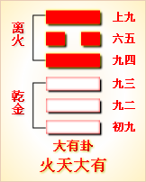

高岛易断 - 11地天泰

高岛易断 11 地天泰
"泰
［56］
"字，从大，从水。形以两手决水，取水从中分，流通无滞，水去而民得安居也。自昔中土，大禹治水，疏通九河，则土壤，教稼穑，奠厥民居，斯地平天成，而万民得生活于其间，永享泰平之福，是《泰》之义也。此卦《坤》上《乾》下，《坤》阴也，《乾》阳也，是天地合气，阴阳爻和，资生资始，而民物咸亨，故名此卦曰《泰》。
泰：小往大来，吉亨。
篆书泰
《彖传》曰：泰，小往大来，吉亨，则是天地交而万物通也，上下交而其志同也。内阳而外阴，内健而外顺，内君子而外小人。君子道长，小人道消也。
此卦《乾》天在下，《坤》地在上，就天地之形体言之，上下颠倒，如不得其义，然此卦所取，不在形而在气。乾为天之气，坤为地之精，天地之形，高卑隔绝，以气相交，乾气上腾，《坤》气下降，二气来往，能成雨泽，雨泽成而万物生育，因名此卦曰《泰》。泰者，通也，又安也，竟也，如《彖传》所言也。
以此卦拟人事，《乾》为夫，《坤》为妻，阴阳交和，定然家室和平安乐。《乾》阳《坤》阴，阴阳二气，包括甚广，天地间一物一事，莫不各有阴阳。就人身体而言，气为阳，血为阴，阴阳齐则血气自平；就人起居而言，静为阴，动为阳，阴阳交则动静自定。此卦以《乾》下《坤》，似乎阴阳倒置，然《彖传》曰"内阳而外阴"，盖以退阴进阳，重君子而抑小人也。《易》理于阴阳消长，防维甚严。人生涉世，是宜推崇阳刚，抑止阴柔，斯二气各得其正，而万事泰然矣。
以此卦拟国家，政府体天地造化之原理，公明正大，以布人民化育之政。《乾》者，君也；《坤》者，臣也。君礼其臣，推诚以任之；臣忠其君，尽诚以事之。圣主得贤臣，以弘功业；贤士得明主，以展才猷。于是万民感其德化，和亲康乐，一道同风，是诚天地交泰之世也，谓之"上下交而其志同"也。以上下二体言之，阳为君子，阴为小人，君子在内，布政施令，小人在外，安分服教，谓之"内君子而外小人"。盖天地之间，有阳即有阴，有君子即有小人。泰和极盛之世，不能无小人，但君子能善化夫小人，小人亦乐从夫君子，两不相害，而其情相通。自我出去者阴之小，自彼入来者阳之大，小人往而各安其生，大人来而乐行其道，是泰道之成也。道有消长，即时有否泰，总括天地阴阳之交，可见世运升降之会。"君子道长，小人道消"，消长之极，正国家治乱之大防也。此卦下三爻为天下治平之时，上三爻为自《泰》趋《否》之时，君子当玩味爻辞，深察气运之变迁，维持泰运于不替也。
圣人之序《易》也，以《乾》《坤》为始，《乾》之后几十有一卦，而后始得《泰》。盖君之以《屯》，教之以《蒙》，养之以《需》，理之以《讼》，正之以《师》，和之以《比》，约之以《小畜》，礼之以《履》，而后始《泰》。故《乾》以下十卦，奇数之爻，凡三十；《坤》以下九卦，偶数之爻，亦三十，而后始得《乾》《坤》相交。开泰之运，其难如是，圣人之所以垂诫于后者深矣！
通观此卦，天气下降，地精上升，天地之气相交，始开造化之功。初九，君子得位，拔擢同气之贤者，共立朝廷，以勤劳国事，谓之"拔茅茹以其汇，征吉"。"汇"，类也，盖以同类而并进也。九二有刚中正之德，为济泰之大臣。"包荒"，谓能包容群才，即所谓"尊贤而容众"是也。然亦一于"包荒"，又必济以果决。"用冯河"取其勇敢，足以任事；"不遐遗"，谓其思虑之诚实，不惟留心于目前，且远及僻偏之域；不惟顾虑于方今，且远图长久之谋。至为国家选择人才，不涉私情，其可进者，虽仇怨而不弃，其不可用者，虽亲近而不举，谓之"朋亡"。九二之行为，公明正大，中正以应尊位，宜六五之信任不疑也，谓之"得尚于中行"。九三居阳之极，其位不中正，且值盛极将衰之时。以卦体见之，天气不能久居下，地气不能久居上，有各将复其本位之象，谓之"无平不陂，无往不复"。夫阴阳之消长，如寒暑之往来，时运使然，无如之何；然天定胜人，人亦足胜天，将陂而预防其陂，将复而预虑其复，克艰其心，贞固其守，尽其人事，以挽天运，是保泰之道也。如此则可永食其福矣。六四以阳居阴，逼近尊位，上三爻皆以虚谦接下，下三皆以刚直事上，四当上下之交，故"翩翩"相从，乐与共进，是以不徒富而从邻，不持戒而相孚也。志同道合，正《彖传》所谓"上下交而其志同"也。六五温顺之君，虚已而信任九二，降其尊而从臣，有"帝乙归妹"之象焉。用此道而获福祉，则大吉而尽善矣。上六，《泰》之终，泰极而变，有"城复于隍"之象。当九二九三之时，尽人事之孚，可以维持泰运，然怠其道以至于是，虽天运循环之自然，亦人事之所自招。上六之时，失泰之道，上下睽隔，民情离散，以兵争之，盖乱之时耳，故曰"勿用师，自邑告命"焉。盖将守其城邑，明其政教，以挽天心，拨乱而返正，亦足以保泰之终也。"平"、"陂"、"城"、"隍"，其机甚捷，其象甚危，垂诫深哉！
爻辞，初曰"茅"地之象；二曰"荒"、曰"河"。亦地之象。三曰"陂"，地之形也，以内卦皆阴，为主《坤》而客《乾》也。四日"富"、曰"实"，五曰"帝乙"，上曰"城"，皆阳之象，外卦皆阳，为主《乾》而客《坤》也。客还而主常住，其义可见矣。
《大象》曰：天地交泰，后以财"成天地之道，辅相天地之宜，以左右民。
此卦天地二气交通之活象，万物即受天地之化育也。圣人见此象以赞天地之化育，为天地之所不能为。盖天地之生万物，笼统无别，圣人能历象日月星辰，分别分至启闭而成岁功，相度东西南北山川道路，以定城邑，察天之时，辨地之利，春夏耕耘，秋冬收积，无非尽致泰之道也，谓之"财成天地之道，辅相天地之宜，以左右民"也。人民之生，必赖君上，斯得遂其生成。"财成"所以制其过，"辅相"所以补其不及也。
（附言）近年卫生之道普及，医学之研究，日益进步，种痘之法盛行，生民免夭折之患，皆足以燮理阴阳，参赞化育也。欧罗巴诸国，以土地之晓瘠，人畜之繁殖，众民生活之艰难，创举移民之略，还殖人民于南北亚米利加、亚弗利加、壕斯太刺利亚及亚细亚诸岛，维日不足。即如我国以土地与人口比较，统计前后数年，每年得四十万口之增加，生活不告不足者，抑有故也。我国之土地膏腴，全国中得米麦两作之暖地，殆居其半；维新以前，两作之地，不满十分之三，今渐增加，既居十分之七。是以人口虽见增加，而生活有资，故不忧其不足。然由今以往两作之地，所余仅居十分之三，人口增加，岁多一岁，朝野贤士，晏然犹未知预筹，不亦可忧？现今开铁路于北海道，渐次移住凡一千万人口，得减内地人民增加之半数，五十年间，犹可保国家之安泰也。其间当设殖民之地于海外各邦，以计国家永远策，谓之"左右民"。
【占】 问国家气运：正当君明臣良，黎民安泰，是全盛之时也。然盛之极即衰之渐，否泰在天，回挽在人，所当深虑，家道亦然。
○ 问谋事：事必可成，后败须防。
○ 问婚嫁：阴阳合体，大吉之象。
○ 问商业：买卖均吉，然卖出利微，买入者利大，其象于"小往大来"见之。
○ 问年成：雨水调和，丰登之象。
○ 问六甲：有男女孪生之象。
○ 问失物：须就左右近处，寻觅自见。
高岛易断 初九：拔茅茹以其汇
［57］
，征吉。
《象传》曰：拔茅征吉，志在外也。
"茹"者，草根牵连之貌；"拔茅茹"者，谓拔茅之一根，其牵连者与之皆拔也。此爻具刚明之才德而居下，六四之大臣，阴阳相应，是在野之贤才，为大臣所荐举者也。以三阳同体，一阳进而众阳共进，犹拔一茅而其茹连类而起也，故设其象曰"拔茅茹"。自古君子得位，则贤士萃于朝廷，同心协力，以成天下之泰；小人在位，则不肖者立进，以启天下之乱，是各从其类也。今初九之"拔茅"，能引荐九二九三之贤士，相共并进，故曰"以其汇"。"汇"者，类也。初九为《泰》之始，得其正位，克履怀德之道，是以吉也，故曰"征吉"。《彖》曰"来"者，谓天气之下降；爻曰"征"者，谓君子之上进。卦以气交，自上而降；爻以位升，自下而升。凡君子之学道也，修之于身，以待其时，居天下之广阔，立天下之正位，行天下之大道，欲使其君为尧舜之君，使其民为尧舜之民，是学者之夙愿也。然天命不佑，不得其志，曲肱饮水，独居陋巷，是独善其身也。然其心要未尝一日忘天下也，《象传》"志在外也"者，谓初九贤士，身虽在下，志在泽民。"外"者，指天下国家也。此爻变则全卦为《升》，《升》初六之辞曰"允升，大吉"，可以卜贤者之升进也。
【占】 问时运：有因人成事之象。
○ 问家宅：有家室团圆，人口平安之吉。
○ 问营商：得主伙合志，货财汇萃之象。
○ 问功名：有逐渐升迁之喜。
○ 问战征：以进攻获胜。
○ 问失物：宜于丛草处寻觅。
○ 问六甲：初胎者生女，三四胎则男。
【例】 明治二年，某藩士氏来，请占从事商业之可否，筮得《泰》之《升》。
断曰：此卦其象为天气彻微地下，地气升腾天上；以人事言之，是被我相合，上下相通之会也，故谓之《泰》。今得初爻，其辞曰"拔茅茹"，夫茅之为物，其茎虽分生，其根则相连。想足下旧交，必有奉职宦途者，就其人而谋仕途，事可必成。余观足下之貌，适于为官，不适于为商。余据《易》理断之，知足下之人品才力，宜从友人而谋进身也。
后此人果从事仕官，渐得升迁。
高岛易断 九二：包荒，用冯
［58］
河，不遐
［59］
遗，朋亡，得尚于中行
［60］
。
《象传》曰：包荒，得尚于中行，以光大也。
"荒"，如洪荒之荒，又兼荒野之义。"包"者，容也；"凭河"者，徒涉也；"不遐遗"者，不忘远也；"朋亡"者，犹坤为地之"丧朋"也；"中行"，犹曰中道也。此爻具刚明之才，秉中正之德，与六五之君，阴阳正应，匡王佐霸，是有猷有为之荩臣也。盖其雍容大度，能包容荒远之细民，抚育教诲，使无一夫不得其所；且有冯河之果断，不流文弱，故曰"包荒"、"用凭河"。自来圣贤之心无弃物，非包荒不足示天地之慈祥，非冯河不能发天地之威怒，雨露雷霆，宽严兼济，而又不弃幽遐，不私习近。九二能体此刚中之德，光明正大，符合中道，故曰"不遐遗，朋亡，得尚于中行"。治泰之道，有此四者，所谓宽则得众，信则民任，敏则有功，公则众悦；诚不失中行之德也。而其要首在于宽，故《象传》统举"包荒"二字以括之，谓其得配中行，以光大也。旨深哉！
为活用占筮，姑就开拓之事而言之。"包荒"者，谓荒野也。"用冯河"者，谓开垦荒地，诱导无业贫民，开道架桥，以从公役。"不遐遗"者，谓极至深山幽僻之地，越险犯阻，而开拓之也。"朋亡，得尚于中行"者，谓无朋比之私，率众而举事，得天下之爱敬者是也。盖"包荒"，仁也；"冯河"，勇也；"不遐遗"，智也；"朋亡"，公也。备此四德治天下，尚有余力，若夫有包容而无断制，则非刚柔相济之才也。不遗遐远，而或阿私党类，则偏重而失公正之体。故必包容荒秽，而又果断刚决；不遗遐远，而又不私昵朋比，则不忘远，不狃迩，是合于中道者也。《象传》"以光大也"者，谓胸次宽阔，有容人之量。"光"则其明足以有照也；"大"则其器足以有容也。
【占】 问时运：目下正当功名显达之时，可以远游海外，创兴事业。
○ 问仕途：有奉使远行，或从事军征之兆，均获吉也。
○ 问商业：利在行商，贩运外物。
○ 问失物：定坠落水中，恐难寻得。
○ 问疾病：不吉。
○ 问家宅：用人宜宽，处事宜决，不可专信仆从，致《损》家业。
○ 问战征：有怀柔远人，征伐不庭，疆宇日辟之势。
○ 问六甲：生男。
【例】 东京友人某氏，在常陆欲开垦沼地，请占吉凶。筮得《泰》之《明夷》。
断曰："泰"古字，象人以左右手决大水之形。凡洲泽之地，由大雨骤降，山岳砂土，冲激崩坠，随流壅积而成，其中低所，或为湖水，或为沼陂。足下今欲开垦沼地，其有利益于社会，以助国家之经济，可知也。爻辞"拔茅茹"者，谓芟除芜草，播种五谷，开垦之好结果也。又"包荒"，谓买荒地之象；"用冯河"，谓尽力乎沟洫也。盖人有巨多之财产，往往以安乐送世为目的，使子孙可永享素餐，以为上策，而不知此真失策之大者。何则？凡世间富者，不计公益，贫者无由得衣食；贫者不得衣食，必至不顾礼义，败坏廉耻，其极至犯禁令而罹法网，谓之国家乱民，乱民之起，皆由游手坐食而来也。足下能包容此辈，奋发而抛资财，欲为众人开垦沼地，藉以赈济饥寒，其志气操行，光明正大，诚有超绝于朋侪者也，故谓"朋亡"。足下之为此事业，利己利人，谓之"尚于中行"，必光大也。友人曰：谨奉命。然余年老，不能亲至其地，监督工业，目今紧要事务，欲余所信任某氏为代理，委以此事，请筮以决之。筮得《坤》之《豫》。
爻辞曰："六四：括囊，无咎无誉。"
断曰：此卦全卦纯阴，无一阳爻。《易》之道，阳为尊，阴为贱，今筮得此卦，恐其人为卑贱之小人也。世之皮相者，皆就人之阶级，以别贵贱，余则专论心术。第一不为己谋而为人谋，众人之所喜，己亦喜之，众人之所恶，己亦恶之，其性情之所发，公正而无丝毫之私，是为上。第二，己之所欲，望人亦有之，万事以和衷相济，不任己之自由，是为其次。第三，专顾利欲，不顾亲戚朋友，苟所得利，遑知廉耻，是为最下。此余之平素所持论也。自来上智之人，生性完善，不见异而思迁，谓之贵人；下愚之人，其心残忍卑鄙，偏于不善，谓之贱人。《坤》之初爻曰，"履霜，坚冰至"，谓争利而至犯上作乱；上爻曰"龙战于野"，谋利而至相争相战，两家俱伤。如委此人以任事，犹售盗以键也，宜括财囊之口而戒于心焉，谓之"括襄，无咎无誉"。此事必当自任，未可委人也。
友人乃从予言。
高岛易断 九三：无平不陂
［61］
，无往不复，艰贞无咎。勿恤
［62］
其孚，于食有福。
《象传》曰：无往不复，天地际也。
"无平不陂，无往不复"者，时运变迁之常，犹月满则亏，花开则落。此爻以全卦见之，正当泰运全盛之时，然玩占爻位，为阳穷阴逼，《泰》之时将终，《否》之时将至也。凡物中则平，过中必倾，天数人事皆然。《泰》至九三，天道复其上，地道归其下，君子抚泰运之极，惟当尽人事以挽回天运，是以思患预防，常惕艰危，如是则可以无咎。此爻重刚不中，互卦有《震》，居健动不止之体，健进一步，即为陂复之象。是《乾》本上也，《坤》本下也，下交上，故《乾》居内而《坤》在外。《乾》苟不安于下，必上而迫《坤》，《坤》苟不得安于上，必下而夺《乾》，故曰"无平不陂"。复而不听其复，持其平，守其往，防微杜渐，用保厥终，凡小人欲乘怠而入者，君子则弥思其难，小人欲伺隙而攻者，君子则必保其贞。其操心之危如此，则举动措置，必无有过咎也，故曰"艰贞无咎"。夫天下之事，未有不戒惧而能保其终者也，《易》之垂诫，于始终消长之机，最为深切。世运之陂复，犹日月之食也，当食霎时晦冥，过时而复光明，故曰"勿恤其孚，于食有福"。"食"即蚀也。以日月之食喻祸，而以食终而光明喻福。
按：六十四卦中，不拘爻之阶级，专以内外卦分时运之转迁者四卦：《泰》、《否》、《既济》、《未济》是也。此卦以内卦三阳，为《泰》中之《泰》，以外卦三阴，为《泰》中之《否》，盖以阳为有余，为实，为富，阴为不足，为虚，为贫。九三居内卦之极，遇六四而当《乾》《坤》二体之会，为《泰》中之《泰》将终，六四居外卦之始，为《泰》中之《否》将来，故于三四两爻，示时运之转变。《象传》曰"天地际也"者，"际"即交际之际，是阴阳之两交接也。
【占】 问时运：谨慎者昌，逸欲者败，最宜留意。
○ 问商业：现虽失意，后必大利。
○ 问战征：须防敌兵埋伏，宜固守，不宜进攻。
○ 问失物：不久即得。
○ 问生产：虽危无咎，必生福泽之儿。
○ 问家业：宜谨守先业，可以永保富也。
○ 问疾病：少者无咎，老者大限有阻。
【例】 明治十八年，奉故三条相公之命，占公气运于滨离宫，筮得《泰》之《大壮》。此时陪从者，为武者小路君、福泽重香君两氏。
断曰：此卦太阳之火气，透彻地下，地精为之蒸发，天地之精气相交，万物发育，国家安泰之象也。拟之国家，政府之恩惠，透彻下民，下民之情志，上达政府，君能信任臣，臣能服从君，故曰《泰》。然《泰》之极，变而为《否》，是阴阳消长，自然推移之运也，故有自《泰》趋《否》之时，又有自《否》趋《泰》之时。此卦内卦三阳，泰平最盛，外卦三阴，自《泰》趋《否》。今筮得三爻，第三爻内卦之极，《泰》中之泰既去，将移外卦之阴，将转入《泰》中之否也，故爻辞曰，平者无不遂陂，往者无不复返，喻时运变迁之义。在时运使然，原非人力所能争，然保其固然，防其未然，惕以艰危，矢以贞诚，人定亦可胜天，故谓之"艰贞无咎，勿恤其孚，于食有福"。阁下声名显赫，勋业崇隆，可媲尹周，小心翼翼，持盈保泰，自有鬼神默相呵护也，故《象传》曰"天地际也"。
后相公解显职，就内大臣之闲位，永矢尽诚，克光辅翼之业。
高岛易断 六四；翩翩不富，以其邻，不戒以孚。
《象传》曰：翩翩不富，皆失实也。不戒以孚，中心愿也。
"翩翩"者鸟刷羽之貌；"邻"者，指六五、上六而言。此爻在泰之时，上与二阴在外卦，皆与下应。阴柔之质，宜在下位，今居上体，志不自安，故上三爻相连，同欲下行，是上者以谦虚接下，不待告诫而自信孚，谓之"翩翩不富，以其邻，不诫以孚"。"不富"者，阴虚之象。此爻是运过中，《泰》将转《否》，为小人合志，谋害正道之时，君子所当戒也。五上皆阴，不富识量，故《象传》曰"翩翩不富，皆失实也"。"皆"者，指《坤》之三阴；"实"者，指阳爻。阴之从阳，犹贫之依富，今三阴在外，失所依也。然当泰之时，阴气上升，阳气下降，上下不相疑，兴国利，植民福，谓之"不诫以孚，中心愿也"。
【占】 问时运：喜得朋友同心相孚，诸事可谋。
○ 问商业：外则场面甚好，内实空虚，全赖同业相助，可以成事。
○ 问战征：粮饷缺乏，当劫掠敌粮，以供军需。众心坚固，有胜无败。
○ 问家业：本一富家，目下外强内弱，幸亲戚邻里，皆得有无相通，不忧匮乏。
○ 问失物：主遗落比邻之家，问之即得。
【例】 东京豪商某氏甲干某来，告曰：维新以来，商况大变，主家遂赴衰运，欲建维持之策，不得方向，如何而可？请筮一卦。筮得《泰》之《大壮》。
断曰：此卦天气下降，地精上升，上下安泰，共守旧规而耽安乐，无事之时也。足下今所占问，无论主人及经理伙友，皆惟知株守旧法，依向来之规则，不知随时而变迁。近今宇内各国通商，商业亦随而更新，彼家信用旧人，不谙新法，又不雇用能才，于是商业日居人后，将数代之积产，遂至艰于接续。《泰》之四爻，泰既过半，将渐入衰运，正合彼家之运也。此时欲谋立维持之策，想旧时伙友，不富于经验，宜代以适任之人，委之事权，使众人投票推荐，以定其人，悉从其指挥。旧时伙友，亦不宜恋恋旧态，勤勉从事新业可也，谓之"翩翩不富，以其邻，不诫以孚"。如此则彼家之衰运，尚可得而维持也。
某氏从余言，奋然改革其家风，至仓监辈，使之投票推荐，果得适任之人。其家至今益致繁盛。
高岛易断 六五：帝乙
［63］
归妹，以祉元吉。
《象传》曰：以祉元吉，中以行愿也。
"帝乙"者，殷纣之父也。此爻柔而居尊位，下与九二之刚，阴阳正应，恭己无为，虚心下贤，是当位之君，开太平之治者也。九二成卦之主，辅弼六五之君以成乃治，故引"帝乙归妹"，下嫁从夫，以喻圣君虚己，下礼贤臣，开国承家，永保福祉，故曰"帝乙归妹，以祉元吉"，"元吉"者，谓大吉而尽善者，即所以成治泰之功也。夫帝女之归也，非求胜其夫，将以祉之；《坤》之复下也，非欲侵《乾》，将以辅之，《彖传》曰："上下交而其志同"者是也。又互卦有《归妹》，故与《归妹》之六五，爻辞相同。《象传》曰"中以行愿也"者，当《泰》之时，君虑《泰》极变《否》，谨慎恐惧，所愿保持之终，永享至治之福，是所谓"中以行愿也"。
【占】 问时运：目下亨通，宜谦虚柔顺，万事皆吉。
○ 问商业：宜贸达海外。吉。
○ 问家宅：得内助之贤。
○ 问婚嫁：宜远嫁远娶，吉。
○ 问六甲：主生贵女。
○ 问疾病：必得神佑，吉。
○ 问失物：拾者必自来归还。
【例】 有相识豪富某来，请占家政气运，筮得《泰》之《需》。
断曰：此卦上下通气之象，主从相应，家政安泰之时也。今筮得第五爻，尊府之财产，相承旧业，足下性质良善，家教完全，但于方今之时势，未免碍于通达。今得第二爻为之经理，能负担一切事务，忠实可靠，故家政整理，商运益盛。然旧时伙友，不免有阴相嫉妒，潜生谗毁者，好在二爻经理人，能如新婚之妇，柔顺相从，谗毁自消，得以十分尽力，克保其家，谓之"帝乙归妹，以祉元吉"。
高岛易断 上六：城复于隍。勿用师，自邑告命。贞吝。
《象传》曰：城复于隍，其命乱也。
"隍"者，城壕也，无水为隍，有水为池。"城"者，筑土所成，隍者辟土所成。"城复于隍"，谓其高城崩而复旧隍也。"自邑告命"，谓从下邑发命令，而告上国也。此爻《泰》之终，将转而为《否》，其象取阴弱之君，不能制阳刚之臣，而以时运之变革为辞，以示盛衰消长之机，曰"城复于隍"。当时运既衰，天命将革，君倦于政，臣工于谗，取民无制，贿赂公行，其极必起逆乱。且军旅之要，以人和为主，上六之时，世运方否，人心不和，犹冰炭之不相容也，若以兵争之，成败难知。且城已坏而不修，岂可据此以战斗乎？故戒之曰"勿用师"。至是而君德既衰，威权尽废，武功不可用，惟退而修文，远略不可图，惟退而治近，故曰"自邑告命"。盖固守城邑，明示政教，如孟子所谓效死勿去，冀得民心，以挽天运也。"贞吝"者，圣人谓其不告命于未否之前，而告命于将否之际，惜已晚矣，虽正犹可羞也，故曰"贞吝"。《象传》曰"其命乱也"者，是上下俱乱也。彼守成之君，生长深宫之中，与妇寺为伍，虽有师传，多非正士，君则骄奢淫佚，臣则阿谀逢迎，无所不至，于是下情抑郁，不通于上，君泽涸滞，不流于下，鬼蜮奸贼，惑乱其间，终至人心离散，国家倾覆，是之谓"其命乱也"。
【占】 问时运：目下气运颠倒，宜谨慎自守，须防小人播弄。
○ 问商业：宜就小做，以待时运。
○ 问战征：攻夺城地，必胜。
○ 问家宅：防有颠覆破败，宜牢稳守业。
○ 问生产：生女。
○ 问失物：恐难复得。
周易 - 11地天泰
|
|
 | ||
| 本卦 | 互卦 | 错卦 | 综卦 |
周易第11卦_泰卦(地天泰)_坤上乾下
周易第十一卦详解
豫卦原文
豫。利建侯行师。
象曰：雷出地奋，豫。先王以作乐崇德，殷荐之上帝，以配祖考。
白话文解释
豫卦：有利于封侯建国，出兵打仗。
《象辞》说：本卦上卦为震，震为雷，下卦为坤，坤为地。春雷轰鸣，大地震动，催发万物，这是豫卦的卦象。先王观此卦象，取法于声满大地的雷鸣，制作音乐，歌功颂德，光荣归于上帝，光荣归于祖考。
《断易天机》解
豫卦震上坤下，为震宫初世卦。雷出地奋，象征春雷使万物苏醒，君王之威行于子民，因此有利于建候、行师。
家运:家庭和合，有通亨之象，凡事宜检点得失，不可胡为，否则招灾不利。
疾病:久病不利，注意肠肺及头部之症。
胎孕:生贵子。安而无灾。生女亦均无碍。
子女:亲子和睦，幸福圆满。留心教养，勿使太任性，否则沦于不幸之破运。
周转:可成。
买卖:交易有益，得利。
等人:会来。
寻人:在朋友或亲戚家里，有信息也。可寻。
失物:不会出现。
外出:一帆风顺。
考试:上榜有望，宜再努力勿懈。
诉讼:是非由小事化大，终可和解。
求事:吉利亨通。
改行:吉。
开业:开业者吉利之象。
第十一卦的哲学含义
为阴。本来乾为天，应该在上，坤为地，应该在下，但是，泰卦这种上坤下乾却很吉利。上卦为坤，为地，地属阴气;下卦为乾，为天，天为阳气。阴气凝重而下沉，阳气清明而上升，阴阳交感。阳气上升若无制约，就会耗尽能量，也不会产生结果，阴气下沉若无制约，也会耗尽能量，故阳气上升，有阴气覆护;阴气下沉，有阳气承托。阴阳交感，上下互通，天地相交，万物泰安。 《象》曰：天地交，泰;后以财成天地之道，辅相天地之宜，以左右民。 《象》中指出：泰卦的卦象为乾(天)下坤(地)上，地气上升，乾气下降，为地气居于乾气之上之表象，阴阳二气一升一降，互相交合，顺畅通达;君主这时要掌握时机，善于裁节调理，以成就天地交合之道，促成天地化生万物之机宜，护佑天下百姓，使他们安居乐业。 泰卦象征通达，启示了因时而变的道理，属于中中卦。《象》这样来断此卦：学文满腹入场闱，三元及第得意回，从今解去愁和闷，喜庆平地一声雷。 此卦的卦名为泰。《说文》中说，"泰，大也。"《礼记•曲礼上》疏，"泰者，大中之大也。"可见泰的意思是极其的博大。地大物博，人们自然就富裕，所以泰也有富裕、宽裕的意思。人们丰衣足食，社会就会和平安定，所以泰还含有平安、稳定的含义。
周易第十一卦初九爻详解
初九爻辞
初九。拔茅茹，以其汇，征吉。
象曰：拔茅征吉，志在外也。
白话文解释
初九：连根拨掉茅草，及其同类。征伐敌人，吉利。
《象辞》说：连根拔掉茅草，彻底征服敌人，吉利，说明志在讨伐敌国。
北宋易学家邵雍解
吉：得此爻者，志同合谋，财利日增。做官的会逐步升迁。
台湾国学大儒傅佩荣解
时运：因人成事，逐步升迁。
财运：合伙有成，货财会聚。
家宅：团圆平安。
身体：相约运动。
初九变卦

初九爻动变得周易第25卦：天雷无妄。这个卦是异卦（下震上乾）相叠。乾为天为刚为健；震为雷为刚为动。动而健，刚阳盛，人心振奋，必有所得，但唯循纯正，不可妄行。无妄必有获，必可致福。
初九爻的哲学含义
在事业上，功名利禄不是第一位的，要更加注重人脉关系。与人交往时，不要吝惜财钱，如果与朋友吃饭，应该用最好的酒来招待。打下良好的人脉关系基础，做起事来才会吉祥如意。要开创一个事业，单靠自己的单枪匹马是难以成功的，应该找到志同道合的"同类"，一起来做，才有成功的可能。
《易经》在古代也被君王用来占卜。君王或领导人占得此卦，就要注意境内的腐败势力，应该将他们像拔草一样，连根除掉，这样才会大吉。
经文意思是：拔茅草，茅草长长的根将它的同类也带离了土地，征战吉祥象辞意思是：拔出茅草征战吉祥，是因为他的心志在向上进取。
拔茅草是古人的农业生产项目之一。有什么用呢?其一是将茅草从田间拔掉，利于庄稼的生长;其二是可以当作家畜的饲料;其三是可以用来作祭祀的物品，即将祭品垫在茅草上面。
周易第十一卦九二爻详解
九二爻辞
九二。包荒，用冯河，不遐遗，朋亡，得尚于中行。
象曰：包荒，得尚于中行，以光大也。
白话文解释
九二：用挖空的瓠瓜绑在身上渡河，不至于沉没。钱币丢失了，在半路上得到别人的帮助。
《象辞》说：其人度量弘大，深得同路人的赏识，这是由于他光明正大呀。
北宋易学家邵雍解
吉：得此爻者，会有好运，必遇尊贵，但要防长上有损，言语有伤。做官的会身居高位，功名显达。
台湾国学大儒傅佩荣解
时运：功名显达，海外亦宜。
财运：行商有利，国际贸易。
家宅：勿信仆从。
身体：疾病难治。
九二变卦

九二爻动变得周易第6卦：天水讼。这个卦是异卦（下坎上乾）相叠。同需卦相反，互为"综卦"。乾为刚健，坎为险陷。刚与险，健与险，彼此反对，定生争讼。争讼非善事，务必慎重戒惧。
九二爻的哲学含义
从卦象上看，九二这一爻以阳爻居阴位，失位但居中。
在初九这一爻之中，提出要重视人脉，在九二这一爻，则强调在结交人的过程之中，要奉行不左不右不偏不倚的中庸之道，你应该具有包容一切的胸怀，并同各种类型的人都保持着良好的关系，这样可以拓宽自己的道路。
《象》曰："包荒"，"得尚于中行"，以光在也。
这句话告诉人们，如果达到了爻辞之中所说的"有包容大川似的宽广胸怀"，"能够辅佐公正有道德的君主"，就要做到自己光明正大，道德高尚。
经文意思是：包容八荒，徒步涉河，不遗失偏远之地的朋友，不结党营私，这是中正的行为准则。
象舌辛意思是：包容八荒，以中正为行为准则，这说明九二的道德广大。
周易第十一卦九三爻详解详解
九三爻辞
九三。无平不陂，无往不复。艰贞无咎。勿恤其孚，于食有福。
象曰：无往不复，天地际也。
白话文解释
九三：平地终将变成坡地，离去必定复返。卜问艰难之事，爻象显示必能渡过难关，不要担心被人虏去，而且在饮食上尚有口福。
《象辞》说：离去必定复返，这是天地间的法则。
北宋易学家邵雍解
平：得此爻者，须谨慎自持，宜保守，则安，不然会犯小人，事事遇阻。做官的会比较艰难，须防小人和别人的妒忌。
台湾国学大儒傅佩荣解
时运：谨慎保守，逸乐亡身。
财运：眼前失意，后有大利。
家宅：谨守先业。
身体：小孩没事，老人不吉。
九三变卦

九三爻动变得周易第33卦：天山遁。这个卦是异卦（下艮上乾）相叠。乾为天，艮为山。天下有山，山高天退。阴长阳消，小人得势，君子退隐，明哲保身，伺机救天下。
九三爻的哲学含义
从卦象上看，九三属于阳爻居于刚位，得位。但是其处于上下卦交接之处，
从此卦之中看就是乾卦与坤卦相交、天与地相交的地方，将会面临许多不测的变化。
占得此卦者，要明白人生的道理，如果你处于逆境之中，你要知道，没有爬不过去的坡，总会有峰回路转，一马平川的时候。相反，你若正处于一片坦途之中，也要当心会遇到险阻，可能会遇到沟沟坎坎的，没有谁是一帆风顺的。当然，也不会总是倒霉。
得此卦之人，虽然人生变幻莫测使你一度迷茫，但是只要坚守正道，只要心怀诚信，终会"守得云开见月明"的。
经文意思是：没有只有平地而没有斜坡的，没有只有往而没有返的。艰难而守正道不会有灾难。不必过分忧虑，内心要诚信，在饮食方面有福可享。
周易第十一卦九四爻详解详解
六四爻辞
六四。翩翩不富，以其邻，不戒以孚。
象曰：翩翩不富，皆失实也；不戒以孚，中心愿也。
白话文解释
六四：巧言欺人，将给邻邑带来灾难；不加警戒，即将遇难被虏。
《象辞》说：巧言欺人，祸及邻人，是说同受损失。不加警戒，遇难被虏，这是因为心地太忠厚了。
北宋易学家邵雍解
平：得此爻者，营谋失利，退守可平安。做官的进取难成，宜退守。
台湾国学大儒傅佩荣解
时运：朋友同心，诸事可谋。
财运：外强中干，同业相助。
家宅：亲友相助，暂时无虞。
身体：不必担心。
六四变卦

六四爻动变得周易第20卦：风地观。这个卦是异卦（下坤上巽）相叠，风行地上，喻德教遍施。观卦与临卦互为综卦，交相使用。在上者以道义观天下；在下者以敬仰瞻上，人心顺服归从。
六四爻的哲学含义
果从一个国家的角度来看，六四这一爻讲的是大臣之间要相互谦恭，不以个人的富贵为目标，大家开诚相待，一起来支持君王，这样就会出现国泰民安的局面
从卦象上看，六四所处的位置是紧挨着九五之尊，位于上下两体阴阳交会之处，上有领导，下有部属。如果他既能尽忠道，又能尽公道，以谦虚的态度搞好与上层领导之间的团结，又能礼贤下士，那就会出现安泰祥和的局面。
对于个人来说，要注意与邻居同事搞好关系，既使是事业发展了，职位提升了，也不要得意忘形。
六四：翩翩不富，以其邻，不戒以孚。
象曰：翩翩不富，皆失实也。不戒以孚，中心愿也。
经文意思是：轻飘飘的不富足，与邻居来往，没有戒备，心存诚信。象辞意思是：轻飘飘的不富足，是因为他们都缺少殷实。不戒备而心存诚信，是因为心中愿意。
六四爻身为国家重臣，怎么会是轻飘飘的不富裕呢?原来呀，他是一个清官!太平盛世，没有清官怎么能行。如果国家重臣一个个既富又贪，百姓怎么能富足呢?怎么会出现太平盛世呢?所以说盛世不但需要好皇帝，也需要好官。六四这个大官就不错，平易近人，内心诚实讲信用，人们与他交往不必存有戒心。电视里演的纪晓岚、刘罗锅，就是这样的清官。
周易第十一卦九五爻详解详解
六五爻辞
六五。帝乙归妹，以祉元吉。
象曰：以祉元吉，中以行愿也。
白话文解释
六五：殷帝乙嫁女于周文王，因而得福，大吉大利。
《象辞》说：得福大吉，因为六五之爻居上卦中位，像人行事得中正之道，所行必遂。
北宋易学家邵雍解
吉：得此爻者，会得到别人的赏识和抬举，或结婚生子，幸福安乐。做官的或能升迁，或有喜事。
台湾国学大儒傅佩荣解
时运：谦虚待人，万事皆吉。
财运：国际贸易，甚为有利。
家宅：有贤内助；远嫁远娶。
身体：必得神佑。
六五变卦

六五爻动变得周易第35卦：火地晋。这个卦是异卦（下坤上离）相叠。离为日，为光明；坤为地。太阳高悬，普照大地，大地卑顺，万物生长，光明磊落，柔进上行，喻事业蒸蒸日上。
六五爻的哲学含义
经文意思是：帝乙嫁妹，以此得福，大吉大利。
诸侯国富强了，盟主就该跟你拉关系了。怎么拉呢?就是把妹妹或女儿嫁给你。这是封建社会的经典治国方法。在秦朝以前，都是分封制，诸侯之间以联姻的方式加强团结，结果导致了窝里斗，窝里反。从黄帝时期至战国时代，大部分战争都是有血
缘关系的统治阶级的争权夺利之战。
在《易经》中，三番五次要提到"帝乙归妹"的事，可见周朝认为这是一件引以为荣的事情。殷商的天子帝乙将妹妹嫁给了周文王，这确实对周朝是一件大事。因为周朝正是因为沾上了殷商血缘关系的光而壮大了起来，并且纣王没杀文王，也与这血缘关系是有些关系的。因为文王是纣王的姑父，并且文王又比较老实，纣王
自然没有坚决要除掉文王的想法。
"帝乙归妹"的手段，在今天也存在"六五"阴柔得中，下应九二上下通泰。像着一定的意义。比如两个相互竞争的大公司，往往因为一桩婚事而化敌为友，化友为亲。解放前"宋氏三姐妹"的例子就是很成功的联姻典范，由于关于"宋氏三姐妹"的书籍很多，在此就不多说了。
占得此卦者，意味着经过痛苦和耐心的等待，实现了长期以来心中祈求的意愿，终于喜庆降临。
周易第十一卦上九爻详解详解
上六爻辞
上六。城复于隍，勿用师。自邑告命，贞吝。
象曰：城复于隍，其命乱也。
白话文解释
上六：城墙攻破倒塌在护城濠里。"停止进攻"，从邑中传来命令。卜问得不祥之兆。
《象辞》说：城墙攻破倒塌在护城濠里（本应乘势攻击，反命停止进攻），这是邑中传来的命令错乱了。
北宋易学家邵雍解
凶：得此爻者，会有破损，有疾病，谨慎厚道者可免祸。做官的会被贬职。
台湾国学大儒傅佩荣解
时运：谨慎自守，须防小人。
财运：小试手气，等待时机。
家宅：小心守业。
身体：小心摔跤。
上六变卦

上六爻动变得周易第45卦：泽地萃。这个卦是异卦（下坤上兑）相叠。坤为地、为顺；兑为泽、为水。泽泛滥淹没大地，人众多相互斗争，危机必四伏，务必顺天任贤，未雨绸缪，柔顺而又和悦，彼此相得益彰，安居乐业。萃，聚集、团结。
上六爻的哲学含义
泰久而否，与否极泰来一样，是天理之必然也。在古代，每个城市修有高高的城墙，城墙下面有沟，这种城下沟，无水时称"隍"，有水时称"池"。人们为了保险，挖掘隍土来修建城墙，这就像治理之道，最后终于实现了安泰。可是到了"泰"之终，又回到了"否"上，就像城墙倒塌，城墙上的土又堆积回到了隍处。这就是"城复于隍"的道理。
《象》曰：城复于隍，其命乱也。
占得此卦者，要明白，自己的处境将向不好的方向转化。所以要注意约束自己，否则会给自己惹来麻烦。事态若不及时控制，可能会危及到自己的事业。